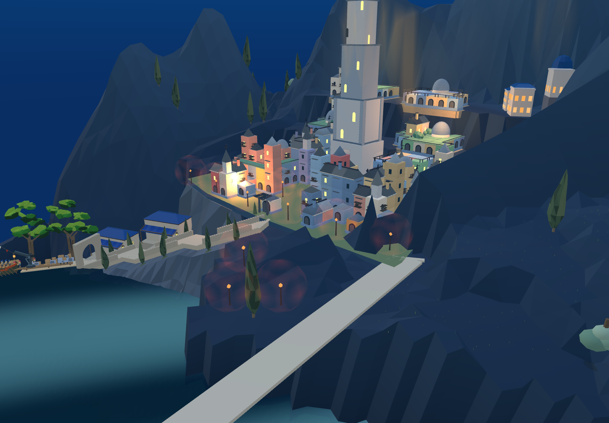
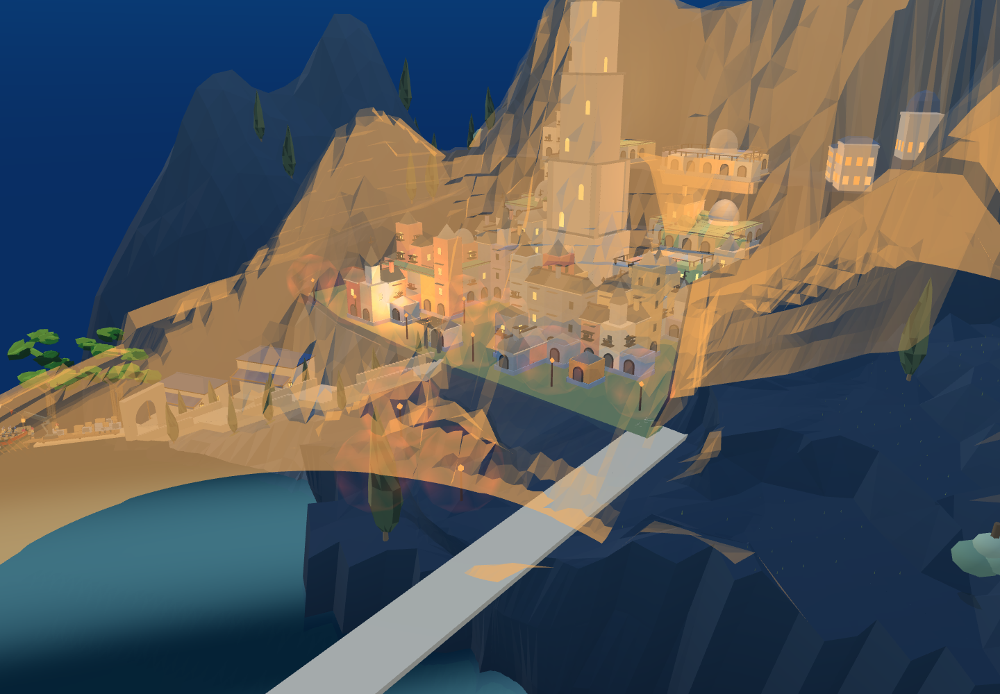
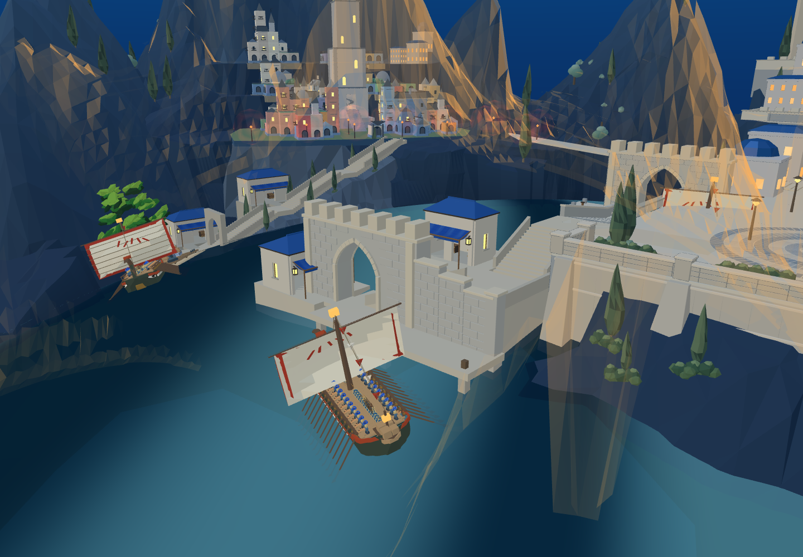
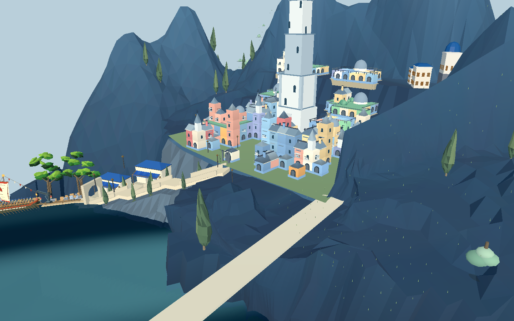
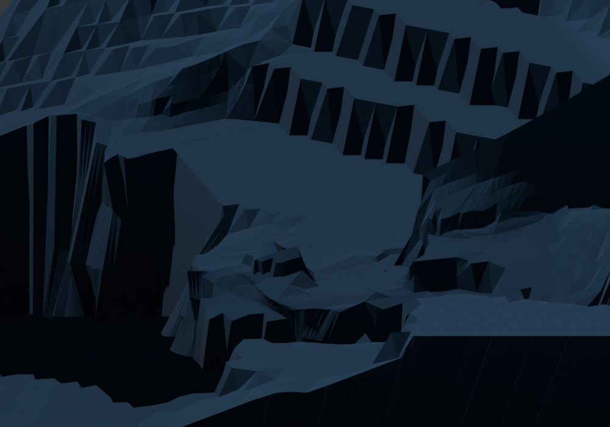

已接默认8931与同一Godot。第三轮清除伸进低层台地的岩块，露出原房屋和入口；沿外缘展开岩肩。保留原房屋、台地标高和旧港上城路线。整体目标仍未完成。

修改前

第三轮：右侧房屋前的岩体已退开




只展示被修改的原地形，不是完整城市成品。第一轮仅动封口岩壁、第二轮只动低处，主要镜头改善不足；最终使用第三轮。
Web旧港上城1473个支撑/净空采样通过；Godot原装备短剑兵90段到达。两项实体地形共增加8636三角形，既有背光层同步后另增加7950三角形，网格数量不变。还没有完成上层台地、整座山势、完整城市照明与战斗。
Web路线检查 · 原士兵Godot通行 · Godot几何核对 · 进入原游戏